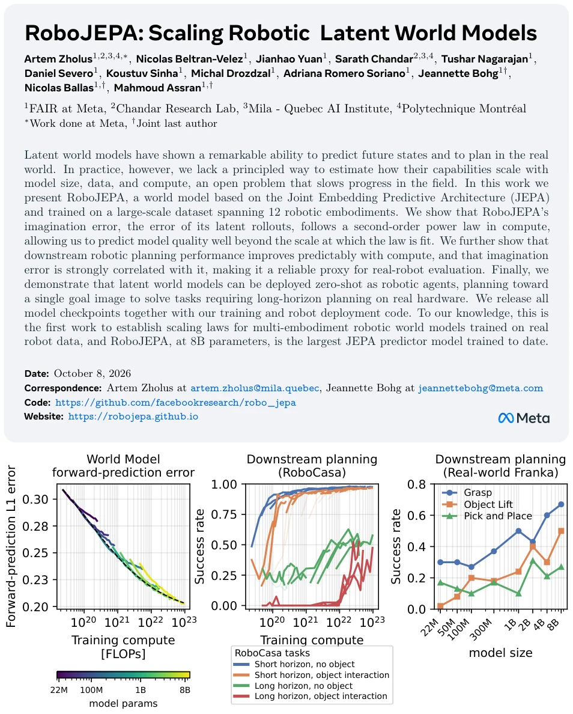
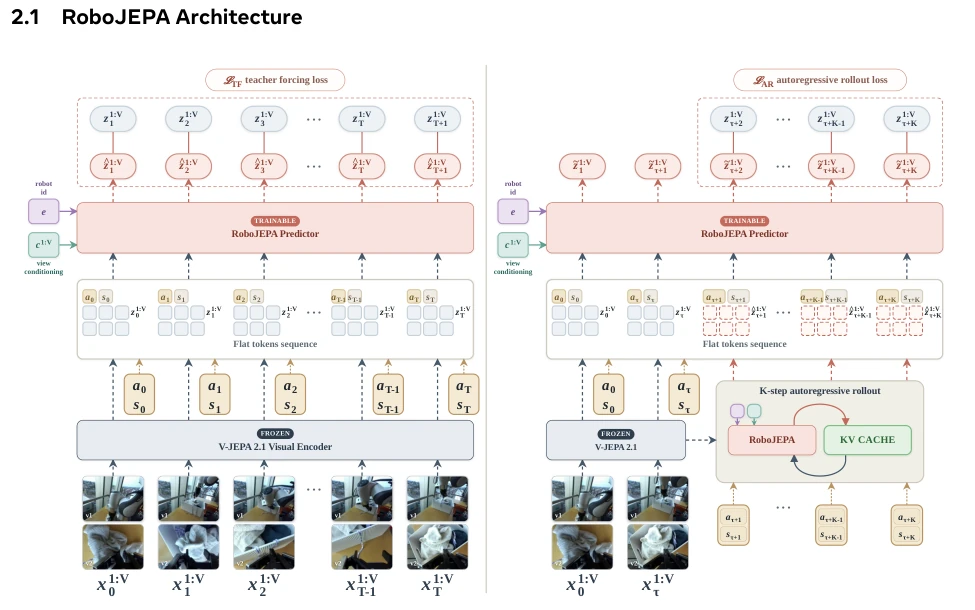
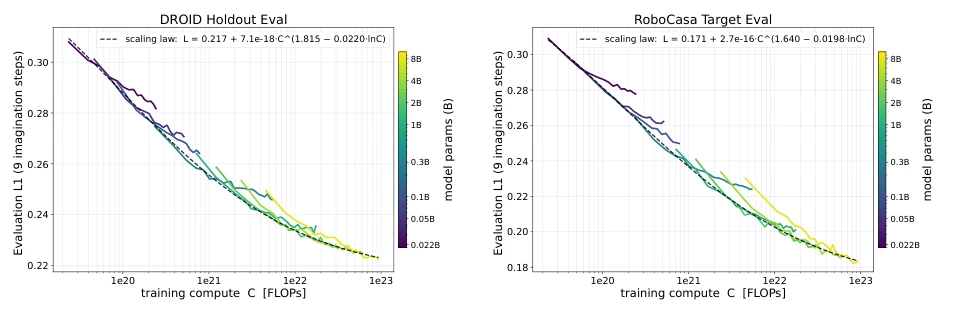
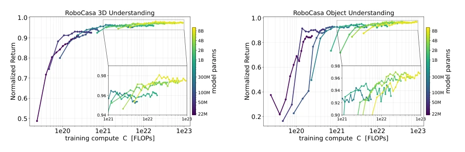
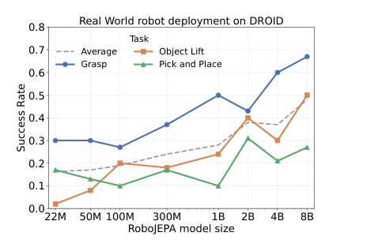
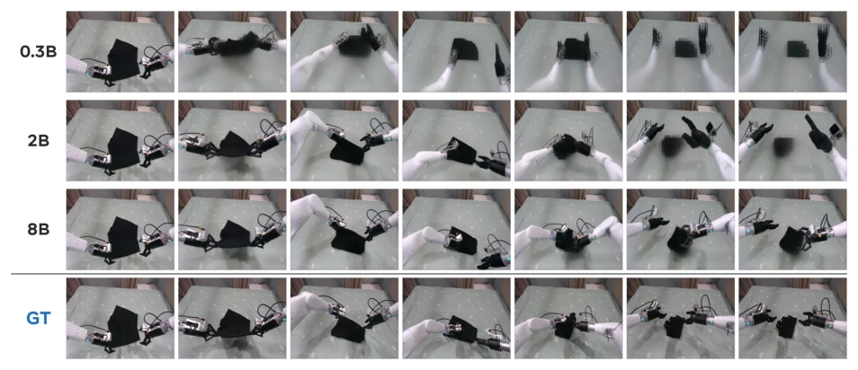
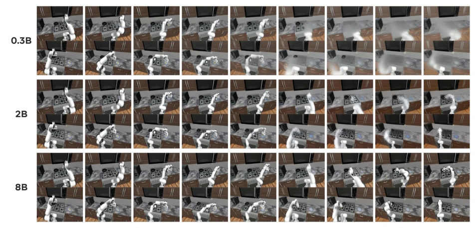
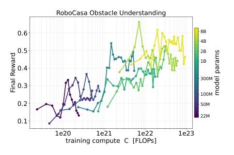
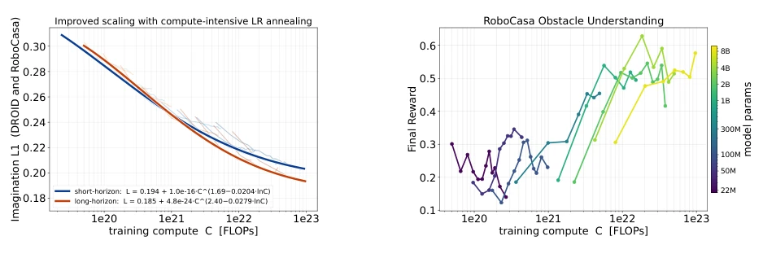
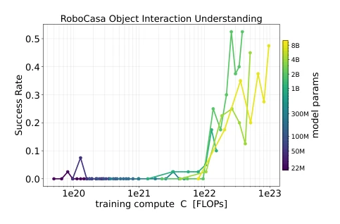

This paper provides a scientific lesson for the 'alchemy' of embodied AI. The Meta team developed an 8B-parameter RoboJEPA, running it across 12 robot platforms, and successfully identified scaling law patterns. The highlight is demonstrating that 'imagination error' can serve as a proxy metric for real robot performance, saving considerable real-world tuning time. However, a critique is that although claiming scaling law, for long horizon tasks, if the training rollout length is not specifically tuned (K=10), small models still fail, indicating that 'universal scaling' still has thresholds. Furthermore, compared to VLA, although RoboJEPA is task-agnostic, inference speed on real robots still relies on pre-compilation, lacking in real-time performance. Overall, this represents a large-scale validation of JEPA in the robotics domain; while it does not solve all problems, it at least indicates where investment should be directed.
研究动机Motivation
具身智能领域，Scaling Law 一直是语言模型和生成模型的专利，机器人世界模型却是个黑盒。虽然 V-JEPA 等模型展示了预测能力 (Assran et al., 2025)，但缺乏数据、参数和计算量如何影响能力的理论指导。现有研究要么只关注生成视频 (Bruce et al., 2024)，要么只缩放策略而非世界模型 (Lin et al., 2025)。这导致在昂贵的机器人数据收集面前，从业者不知道是该买更多显卡还是攒更多数据。本文旨在填补这一空白，建立基于真实机器人数据的动作条件世界模型缩放规律，让 scaling 从赌博变成科学。
In the field of embodied AI, Scaling Law has long been the domain of language models and generative models, whereas robot world models remain a black box. Although models such as V-JEPA have demonstrated prediction capabilities (Assran et al., 2025), there is a lack of theoretical guidance on how data, parameters, and compute volume influence capabilities. Existing research either focuses solely on video generation (Bruce et al., 2024) or scales policies rather than world models (Lin et al., 2025). This leaves practitioners uncertain, in the face of costly robot data collection, whether to purchase more GPUs or accumulate more data. This paper aims to fill this gap by establishing scaling laws for action-conditioned world models based on real robot data, transforming scaling from gambling into science.

Figure 1 RoboJEPA scales predictably from offline prediction to real-robot control. Left: the world model’s forward- prediction (ℓ1) error, averaged over the DROID and RoboCasa held-out sets, follows a scaling law in training compute. Middle: downstream planning success in RoboCasa improves predictably with compute across tasks of increasing difficulty. Right: on the real Franka robot, the success rate improves with model size across Grasp, Object Lift, and Pick and Place. Actions are sampled from a uniform distribution and prioritized using the World Model during planning.
The overall architecture comprises a frozen V-JEPA 2.1 visual encoder and a trainable Transformer predictor. Inputs consist of multi-view visual tokens, actions, and proprioceptive states, with spatiotemporal view information encoded via specific Tokenization and RoPE. The training objectives comprise two parts: Teacher-forcing loss ensures single-step prediction accuracy, while Autoregressive rollout loss (K steps) suppresses error accumulation. The planning phase employs the CEM algorithm, searching for action sequences in latent space based on a single target image. Regarding data, 23 public datasets were unified, covering 12 robot platforms, addressing the training challenges of heterogeneous data (different views, resolutions). During inference, KV-cache is utilized for acceleration, and computation graphs are pre-compiled to balance latency in real robot deployment. Furthermore, the model adopts QK-normalization to ensure training stability and uses causal attention masks to prevent future information leakage, ensuring the causality of predictions.

Figure 3 RoboJEPA training. The frozen V-JEPA 2.1 encoder f (Mur-Labadia et al., 2026) maps the input multiview frames x(1:V ) t to a grid of features. The predictor gθ consumes per-step sequences of multiview visual (z(1:V ) t ), action (at) and proprioceptive state (st) tokens, conditioned on view and embodiment identifiers, and predicts the next-step features ˆzt+1. Training minimises two losses: (left) the teacher-forcing loss, the per-token ℓ1 distance between predicted features and the next-step features from the encoder (Equation (5)); and (right) the rollout loss, which attempts to predict the same target sequence as the teacher-forcing loss, but given fewer input frames. The model is given the full training sequence of actions but only a prefix of the encoded features, and predict
Experiments were conducted on DROID (real robot) and RoboCasa (simulation), with model sizes ranging from 22M to 8B. The primary metrics are the L1 error of latent forward prediction and downstream planning success rate. Results indicate that the error follows a second-order power law and is strongly correlated with real robot task success rates. On long horizon tasks (obstacle avoidance, pushing objects), short horizon training leads to small model failure, requiring adjustment of the training rollout length to restore scaling laws. Real robot deployment on Franka was completed for grasping, lifting, and pick & place; the 8B model performed better than small models and was more robust than VLA baselines (π0-FAST, π0.5) on specific tasks, although VLA also holds advantages in complex tasks.

Figure 5 World-model scaling laws. Out-of-distribution forward-prediction L1 error versus training compute for Robo- JEPA models from 22M to 8B parameters (color), evaluated on a real-robot DROID holdout and simulated RoboCasa scenes. The compute-optimal frontier (lower envelope) follows the second-order power law L(C)=E+A Cα−γ ln C

Figure 6 Downstream planning success scales with training compute. Median success rate on the reach task versus total training compute, following a power-law fit.

Figure 10 Real-world deployment on DROID. Success rates across model sizes for three manipulation tasks; the dashed line shows their average.
其他图片Other Figures

Figure2 World-modelimaginationimproveswithscale. Decoded imagination rollouts on an AgiBot episode for RoboJEPA at 0.3B, 2B, and 8B parameters, compared against the ground-truth (GT) video (bottom row). Each row shows the same rollout sampled at equal-time steps; larger models track the true dynamics and preserve object and contact detail markedly better . All world models share the same encoder (V-JEPA 2.1-G) and decoder.

Figure 4 Two-view imagination scales in simulation. First 60 s of a RoboCasa rollout (two agent-view cameras, stacked within each cell) imagined by RoboJEPA at 0.3B, 2B, and 8B parameters. Larger models keep the two views mutually consistent and preserve manipulation detail markedly deeper into the rollout. All world models share the same encoder (V-JEPA 2.1-G) and decoder.

Figure 7 Short-horizon prediction training on obstacle-reach. Final reward versus training compute. The reward cor- relates with compute, but no clean frontier emerges and smaller models often beat larger ones.

Figure8 Longer-horizonpredictiontrainingimprovesscalinganddownstreamlong-horizonplanning. (a) Second-order scaling laws of the imagination error on DROID and RoboCasa for the two cooldown recipes. (b) Obstacle-reach final reward versus total training compute for the long-horizon (K = 10) models.

Figure 9 Downstream success rate on the RoboCasa push task versus training compute, for the long-horizon (K = 10) models.